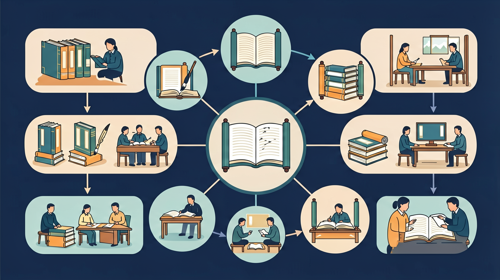

🎯 能说出书中3个关键情节的发展顺序
🎯 能判断作者通过细节描写表达的情感
🎯 能分析主要人物性格对故事发展的影响
❓ 为什么这本书的主角要这么做？
❓ 作者写这个情节想告诉我们什么？
❓ 如果我是主角的朋友会怎么帮他？
学完这一课，这些问题你都能自信地回答。
判断故事高潮的依据是什么？
哪项最能体现人物性格？
整本书阅读要求在一段时间内读完一本适合的书，关注情节发展、人物变化和主题。与单篇课文相比，更强调坚持、预测、联系和整体思考。
根据页数制定每周阅读页数，读时用阅读记录本记下人物、疑问和精彩页码。读完后画故事山或人物关系图，参加班级读书交流，深化理解。
常见误区：常见误区是三天打鱼两天晒网，或只追情节不做思考。要定计划、勤记录、善交流。
整本书阅读较重要的习惯是？
读完画故事山（开端高潮结局），并写一张推荐卡给同学。输出倒逼更深的整本书理解。
And：学生知道看书要从书名判断内容
But：但面对书架时不知如何快速选择适合自己的书
Therefore：教孩子用'五步选书法'锁定目标
核心是'兴趣+难度'匹配原则。先看封面图画是否吸引你（比如恐龙/公主主题），再翻到第23页试读——如果能流畅读懂连续5句话，就是合适的难度。例如小明想读《昆虫日记》，发现第23页有'鞘翅目'等生词，就换更简单的《蚂蚁搬家》
🌍 就像买鞋子要试穿，图书馆选书时可以坐在彩虹地毯上试读三分钟。上周二年级小美用这个方法找到了《彩虹鱼》系列
试读时遇到3个生词该怎么办？
And：学生会用荧光笔划好词好句
But：往往全书划满却不会重点复习
Therefore：用颜色区分'记忆层级'提升效率
准备红黄蓝三色贴纸：红色贴惊人的事实（如《海底两万里》中'鹦鹉螺号长70米'），黄色贴优美比喻（'水母像会跳舞的果冻'），蓝色贴引发思考处（'人类真的是地球主人吗？'）。例如读《西游记》时，给'金箍棒重一万三千五百斤'贴红色，'筋斗云翻过九重天'贴黄色
🌍 就像妈妈用不同颜色冰箱贴区分重要事项，上周小亮用这个方法整理《恐龙百科》，复习时先看红色贴纸的暴龙体重数据
书中'月亮像大银盘挂天上'该贴什么颜色？
And：学生能说出主角名字
But：常混淆配角或忘记人物关系
Therefore：用表格可视化角色网
画田字格：左边写角色名（如《草房子》里的桑桑），右边三个格子分别填'外貌特征（雀斑）'、'关键事件（第56页养鸽子）'、'变化（从调皮到懂事）'。读《三国演义》简化版时，用不同颜色箭头表示'诸葛亮→帮助→刘备'的关系
🌍 就像用球队阵型图记住球员位置，上学期三（2）班用这个方法讨论《查理和巧克力工厂》，能说出所有金奖券得主特点
记录'皮皮鲁有闪电标志T恤'该填哪个格子？
And：学生会写'这本书很好看'
But：评论缺乏具体细节支撑
Therefore：用'汉堡结构'写出丰富书评
像做汉堡一样分三层：上面面包是'惊喜点'（如《神奇校车》第15页的细胞变大画面），中间肉饼是'学到的新知识'（知道了白细胞像警察），下面面包是'联想生活'（想起自己感冒时白细胞在战斗）。例如写《窗边的小豆豆》书评，可以用巴学园电车教室对比自己的教室
🌍 就像吃汉堡要每层都咬到，四年级小强的《昆虫记》书评因为写了'法布尔花37年研究粪金龟'获得三颗星
书评中'我最喜欢第40页'属于汉堡哪部分？
用情节梯梳理故事发展关键节点
通过人物对话分析隐藏的性格特点
对比不同版本插画表现手法的差异
用气泡图呈现人物关系网络
将书中解决方法用于班级矛盾调解
哪种表述能帮助区分文学与科学文本？
选取科普书和童话中各一段动物描写进行对比
✅ 圈出人物动作/语言的关键词
💡 混淆外在特征与内在特质
✅ 寻找文中反复出现的意象
💡 缺乏文本依据的主观臆断
口诀：人物情节和环境，三要素里藏真经
类比：读故事就像拼拼图，要把碎片连成图
先独立作答，再点选项查看对错与错因。
《昆虫记》中'蟋蟀在月光下拉小提琴'这种写法属于
下列哪项是科普文章常见的表达方式？
阅读童话时最重要的是关注
《小蝌蚪找妈妈》中，小蝌蚪会说话是使用了____手法
答案：拟人
赋予动物人的语言能力是拟人修辞
比较文学与科学文本时，要注意区分____和客观事实
答案：艺术想象
文学允许合理想象创造
点击节点跳转到对应章节；可切换布局。